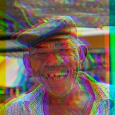

RGB-разрыв бита

Разводит красный и синий каналы на каждый бит. Сначала выберите музыкальный клип, откройте его меню и нажмите «Отметить биты»; без отметок эффект следует настройке BPM.
Настройки
| Настройка | Тип | Диапазон | По умолчанию |
|---|---|---|---|
| Сила | Число | от 0% до 30% | 3% |
| Угол | Угол | от -3600° до 3600° | 0° |
| Затухание | Число | от 0.05 s до 2 s | 0.4 s |
| Биты | Выбор | Каждый бит, Каждый 2-й бит, Каждый 4-й бит | Каждый бит |
| Смещение | Число | от -1 s до 1 s | 0 s |
| BPM | Число | от 20 до 300 | 120 |